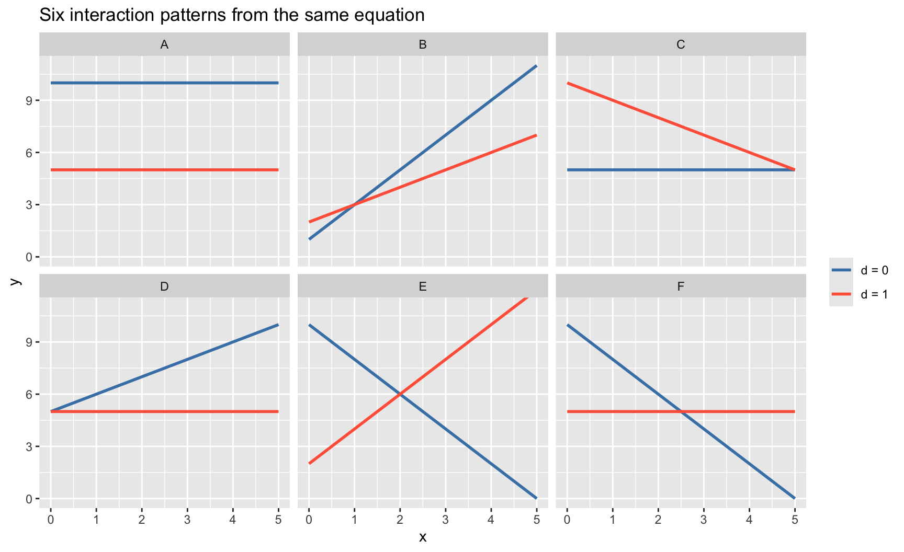

library(ggplot2)
options(digits = 3)2. The CEF and Best Linear Predictor
Why regression approximates the CEF
The conditional expectation function \(m(X) = \mathbb{E}[Y|X]\) is the best predictor of \(Y\) given \(X\) — but we rarely know it. The best linear predictor (BLP) is the next best thing: a linear approximation that only requires knowing means, variances, and covariances. This chapter explores the gap between the two and what we gain (and lose) by going linear.
Questions this chapter answers:
- What is the best predictor of \(Y\) given \(X\), and why is it the conditional expectation function?
- How does the best linear predictor (BLP) approximate a nonlinear CEF?
- When does the BLP equal the CEF, and why does joint normality guarantee linearity?
- How does omitted variable bias arise, and why don’t additional controls always help?
ImportantPopulation Quantities vs. Sample Estimates
The CEF and BLP are population quantities defined through expectations — \(m(X) = \mathbb{E}[Y|X]\) and \(\beta = \text{Var}(X)^{-1}\text{Cov}(X,Y)\) — and describe properties of the joint distribution of \((X,Y)\), not of any dataset. Running lm() in R performs OLS on a sample and produces estimates of the BLP. Running loess() produces a nonparametric smooth of sample data — an estimate of the CEF, not the CEF itself. In this chapter we often know the true data-generating process and can write down the CEF analytically (e.g., \(m(X) = X^2\)). When we can, we plot the true population CEF directly rather than approximating it from data.
1 CEF error: mean independence is not independence
Define the CEF error as \(e = Y - m(X)\). By construction, \(\mathbb{E}[e|X] = 0\) — this is called mean independence. But mean independence is weaker than full independence: the variance of \(e\) can still depend on \(X\).
Here’s the lecture’s example: \(X \sim \text{Uniform}(-1, 1)\) and \(Y = X^2 + X\varepsilon\), where \(\varepsilon \sim N(0,1)\) is independent of \(X\).
Definition 1 (Conditional Expectation Function) The CEF is \(m(X) = \mathbb{E}[Y|X]\), the function that gives the mean of \(Y\) for each value of \(X\). The CEF error \(e = Y - m(X)\) satisfies mean independence: \(\mathbb{E}[e|X] = 0\).
set.seed(307)
n <- 5000
x <- runif(n, -1, 1)
eps <- rnorm(n)
y <- x^2 + x * eps
# CEF is m(X) = X^2
m_x <- x^2
e <- y - m_x
# Mean independence: E[e|X] ≈ 0 in every bin
bins <- cut(x, breaks = 20)
bin_means <- tapply(e, bins, mean)
round(bin_means, 3) (-1,-0.9] (-0.9,-0.8] (-0.8,-0.7] (-0.7,-0.6]
-0.062 0.036 0.036 0.070
(-0.6,-0.5] (-0.5,-0.4] (-0.4,-0.3] (-0.3,-0.2]
-0.006 0.021 0.012 0.018
(-0.2,-0.1] (-0.1,-0.000463] (-0.000463,0.0995] (0.0995,0.199]
-0.009 0.000 0.002 0.006
(0.199,0.299] (0.299,0.399] (0.399,0.499] (0.499,0.599]
-0.007 -0.031 -0.056 -0.037
(0.599,0.699] (0.699,0.799] (0.799,0.899] (0.899,1]
0.033 -0.003 0.016 0.026 The conditional means of \(e\) are all near zero. But the conditional variance grows with \(|X|\):
df <- data.frame(x = x, e = e)
ggplot(df, aes(x, e)) +
geom_point(alpha = 0.15, size = 0.8) +
geom_smooth(method = "loess", se = FALSE, color = "steelblue", linewidth = 1) +
labs(x = "X", y = "CEF error (e)",
title = "Mean independence holds, but errors are heteroskedastic",
subtitle = "Var(e|X) = X², so spread increases with |X|") +
theme_minimal()`geom_smooth()` using formula = 'y ~ x'
The smooth line hovers at zero (mean independence), but the spread fans out. This pattern — \(\text{Var}(e|X) = X^2\) — is heteroskedasticity. The CEF decomposes \(Y\) into signal and noise, but doesn’t guarantee the noise is uniform.
2 The CEF is the best predictor
Among all functions of \(X\), the CEF minimizes mean squared prediction error. Let’s demonstrate by comparing the CEF to some alternatives for the same DGP.
# True CEF: m(X) = X^2
# Competitor 1: the unconditional mean
# Competitor 2: a linear predictor
# Competitor 3: a cubic predictor
mse_cef <- mean((y - x^2)^2)
mse_mean <- mean((y - mean(y))^2)
mse_linear <- mean(residuals(lm(y ~ x))^2)
mse_cubic <- mean(residuals(lm(y ~ x + I(x^2) + I(x^3)))^2)
data.frame(
predictor = c("Unconditional mean", "OLS (linear)", "OLS (cubic)", "True CEF (X²)"),
MSE = round(c(mse_mean, mse_linear, mse_cubic, mse_cef), 4)
) predictor MSE
1 Unconditional mean 0.401
2 OLS (linear) 0.401
3 OLS (cubic) 0.311
4 True CEF (X²) 0.312The CEF has the lowest MSE. The cubic comes close because \(X^3\) has mean zero for symmetric \(X\), so the cubic approximation is nearly \(X^2\). The linear predictor does worse — it can’t capture the curvature.
3 CEF vs. BLP: when the line misses the curve
The BLP minimizes \(\mathbb{E}[(Y - a - bX)^2]\) and yields \(b = \text{Cov}(X,Y)/\text{Var}(X)\). When the CEF is nonlinear, the BLP draws the best straight line through a curved relationship.
Definition 2 (Best Linear Predictor) The BLP of \(Y\) given \(X\) is \(\alpha + \beta'X\) where \(\beta = \text{Var}(X)^{-1}\text{Cov}(X, Y)\). The BLP error satisfies \(\mathbb{E}[Xe] = 0\) (uncorrelated with \(X\)) but not necessarily \(\mathbb{E}[e|X] = 0\).
# Same DGP: Y = X^2 + X*eps
df <- data.frame(x = x, y = y)
ggplot(df, aes(x, y)) +
geom_point(alpha = 0.1, size = 0.5) +
stat_function(fun = function(x) x^2, aes(color = "True CEF: X²"),
linewidth = 1.2) +
stat_function(fun = function(x) 1/3, aes(color = "True BLP: 1/3"),
linewidth = 1.2) +
scale_color_manual(values = c("True CEF: X²" = "tomato",
"True BLP: 1/3" = "steelblue"),
name = "") +
labs(x = "X", y = "Y",
title = "The BLP is the best line through a curved CEF") +
theme_minimal()
The true BLP is a flat line at \(1/3\) because \(\text{Cov}(X,Y) = \mathbb{E}[X^3] = 0\) by symmetry of \(X\), giving slope \(\beta = 0\) and intercept \(\alpha = \mathbb{E}[Y] = \mathbb{E}[X^2] = 1/3\). The BLP does the best any line can, but it cannot capture the curvature.
The BLP residual \(e = Y - \alpha - \beta X\) satisfies \(\mathbb{E}[Xe] = 0\) (uncorrelated with \(X\)), but not \(\mathbb{E}[e|X] = 0\). The residual still contains nonlinear structure: the conditional mean of the residual traces out \(X^2 - 1/3\) rather than zero:
# True BLP: α = 1/3, β = 0, so residual is Y − 1/3
df$blp_resid <- y - 1/3
ggplot(df, aes(x, blp_resid)) +
geom_point(alpha = 0.1, size = 0.5) +
stat_function(fun = function(x) x^2 - 1/3, color = "tomato", linewidth = 1) +
geom_hline(yintercept = 0, linetype = "dashed") +
labs(x = "X", y = "BLP residual (Y − 1/3)",
title = "BLP residuals still contain nonlinear structure",
subtitle = "True E[e|X] = X² − 1/3 ≠ 0, but E[Xe] = 0") +
theme_minimal()
4 When does BLP = CEF?
The BLP equals the CEF when the CEF is actually linear. An important sufficient condition: if \((X, Y)\) are jointly normal, the CEF is linear. Let’s verify.
library(MASS)
set.seed(42)
# Jointly normal (X, Y)
Sigma <- matrix(c(1, 0.7, 0.7, 1), 2, 2)
joint <- mvrnorm(5000, mu = c(0, 0), Sigma = Sigma)
x_norm <- joint[, 1]
y_norm <- joint[, 2]
df_norm <- data.frame(x = x_norm, y = y_norm)
ggplot(df_norm, aes(x, y)) +
geom_point(alpha = 0.1, size = 0.5) +
stat_function(fun = function(x) 0.7 * x, aes(color = "True CEF: 0.7X"),
linewidth = 1.2) +
geom_smooth(method = "lm", se = FALSE, aes(color = "OLS fit"),
linewidth = 1.2, linetype = "dashed") +
scale_color_manual(values = c("True CEF: 0.7X" = "tomato",
"OLS fit" = "steelblue"),
name = "") +
labs(title = "Jointly normal: the true CEF is linear and OLS recovers it",
x = "X", y = "Y") +
theme_minimal()`geom_smooth()` using formula = 'y ~ x'
The OLS line (dashed) sits on top of the true CEF because the CEF is genuinely linear when the data are jointly normal. We can verify analytically: with \(\mu = 0\) and \(\Sigma_{XY}/\Sigma_{XX} = 0.7\), the true CEF is \(\mathbb{E}[Y|X] = 0.7X\), which is also the BLP. The OLS fit estimates this population line from the sample and, with \(n = 5{,}000\), comes very close — but the population CEF and BLP exist before any data are drawn.
NoteJoint Normality Implies Linear CEF
If \((X, Y)\) are jointly normal, the conditional expectation \(\mathbb{E}[Y|X]\) is exactly linear in \(X\), and the BLP equals the CEF. This is a sufficient but not necessary condition — other distributions can also produce linear CEFs.
5 The BLP in formulas and code
The population BLP coefficient is \(\beta = \text{Var}(X)^{-1}\text{Cov}(X, Y)\). In a sample, OLS estimates this:
# True population BLP: alpha = 0, beta = Sigma_XY / Sigma_XX = 0.7
# Sample analog using cov/var
beta_formula <- cov(x_norm, y_norm) / var(x_norm)
alpha_formula <- mean(y_norm) - beta_formula * mean(x_norm)
# OLS gives the same sample answer
beta_ols <- coef(lm(y_norm ~ x_norm))
cbind(population = c(0, 0.7),
sample_analog = c(alpha_formula, beta_formula),
OLS = beta_ols) population sample_analog OLS
(Intercept) 0.0 -0.00942 -0.00942
x_norm 0.7 0.69753 0.697536 Dummy variables: the CEF for discrete X
When \(X\) is a categorical variable, the CEF is just group means. Regression with dummies recovers these exactly.
set.seed(2026)
n <- 300
party <- sample(c("Dem", "Rep", "Ind"), n, replace = TRUE,
prob = c(0.4, 0.35, 0.25))
approval <- 50 + 10 * (party == "Dem") - 5 * (party == "Rep") + rnorm(n, sd = 8)
df_party <- data.frame(party = factor(party), approval = approval)
# Group means = the CEF
tapply(df_party$approval, df_party$party, mean) Dem Ind Rep
59.6 50.7 45.9 # Regression with dummies (R does this automatically)
coef(lm(approval ~ party, data = df_party))(Intercept) partyInd partyRep
59.6 -8.9 -13.7 The intercept is the mean for the baseline group (alphabetically first: Dem), and the coefficients are differences from that baseline.
7 Interactions: when the slope depends on a group
An interaction term \(D_i \times x_i\) allows the effect of \(x\) to differ by group. The full model is
\[y = \beta_0 + \beta_1 x + \beta_2 d + \beta_3 (d \times x) + e\]
with four distinct behaviors baked into the four coefficients:
- \(\beta_0\) is the intercept for the \(d=0\) group
- \(\beta_1\) is the slope on \(x\) for the \(d=0\) group
- \(\beta_2\) is how much the \(d=1\) intercept shifts up or down
- \(\beta_3\) is how much the \(d=1\) slope shifts relative to the \(d=0\) slope
So the \(d=1\) group has intercept \(\beta_0 + \beta_2\) and slope \(\beta_1 + \beta_3\). The marginal effect of \(d\) depends on \(x\): \(\partial y / \partial d = \beta_2 + \beta_3 x\). The marginal effect of \(x\) depends on \(d\): \(\partial y / \partial x = \beta_1 + \beta_3 d\).
7.1 A zoo of interaction patterns
Six parameter patterns, six pictures. For each panel, blue is the \(d=0\) line, red is the \(d=1\) line. The same equation \(y = \beta_0 + \beta_1 x + \beta_2 d + \beta_3 (d\times x)\) produces all six.
models <- data.frame(
model = factor(c("A", "B", "C", "D", "E", "F"),
levels = c("A", "B", "C", "D", "E", "F")),
b0 = c(10, 1, 5, 5, 10, 10),
b1 = c(0, 2, 0, 1, -2, -2),
b2 = c(-5, 1, 5, 0, -8, -5),
b3 = c(0, -1, -1, -1, 4, 2)
)
grid <- expand.grid(x = seq(0, 5, length.out = 2),
d = c(0, 1),
model = models$model)
grid <- merge(grid, models, by = "model")
grid$y <- with(grid, b0 + b1 * x + b2 * d + b3 * d * x)
grid$d <- factor(grid$d, labels = c("d = 0", "d = 1"))
ggplot(grid, aes(x, y, color = d)) +
geom_line(linewidth = 1) +
facet_wrap(~ model, ncol = 3) +
scale_color_manual(values = c("d = 0" = "steelblue",
"d = 1" = "tomato")) +
coord_cartesian(ylim = c(0, 11)) +
labs(x = "x", y = "y", color = NULL,
title = "Six interaction patterns from the same equation")
Every one of these shapes — parallel lines, converging lines, crossing lines, one flat and one sloped — is a combination of \((\beta_0, \beta_1, \beta_2, \beta_3)\). The shape tells you which coefficients are zero and which are not:
| \(\beta_1\) | \(\beta_2\) | \(\beta_3\) | Pattern | |
|---|---|---|---|---|
| A | 0 | \(\neq 0\) | 0 | Parallel, both flat, \(d=1\) shifted down |
| B | \(\neq 0\) | \(\neq 0\) | \(\neq 0\) | Both slope up, \(d=1\) less steep, crossing |
| C | 0 | \(\neq 0\) | \(\neq 0\) | \(d=0\) flat, \(d=1\) starts high and decays |
| D | \(\neq 0\) | 0 | \(\neq 0\) | Same intercept, diverging slopes |
| E | \(\neq 0\) | \(\neq 0\) | \(\neq 0\) | Opposite slopes: crossing, “no main effect” illusion |
| F | \(\neq 0\) | \(\neq 0\) | \(\neq 0\) | \(d=1\) flat while \(d=0\) decreases |
Pattern E is the classic cautionary case: at \(x \approx 2\) both lines cross, so the “average effect of \(d\)” is near zero. But \(d\) matters greatly — its effect just depends on \(x\). A \(t\)-test on \(\beta_2\) alone would miss this; the joint test of \(\beta_2 = 0, \beta_3 = 0\) does not. See the training × experience example in Chapter 6.
7.2 Mapping theories to parameter restrictions
Many substantive claims — from political science, policy analysis, and the social sciences broadly — are claims about conjunctions: “\(x\) matters only when \(d\) is present”, “\(d\) is necessary for anything to happen”, “\(x\) and \(d\) substitute for each other.” The interaction model turns each of these into a testable restriction on \((\beta_1, \beta_2, \beta_3)\).
| Theoretical claim | Restriction on \(\beta\) | Type |
|---|---|---|
| \(d\) has no effect at all (is irrelevant) | \(\beta_2 = 0\) and \(\beta_3 = 0\) | joint (\(q=2\)) |
| \(x\) has no effect at all | \(\beta_1 = 0\) and \(\beta_3 = 0\) | joint (\(q=2\)) |
| \(d\) is necessary for \(x\) to matter | \(\beta_1 = 0\), \(\beta_3 \neq 0\) | single + sign |
| \(x\) is necessary for \(d\) to matter | \(\beta_2 = 0\), \(\beta_3 \neq 0\) | single + sign |
| Effects are additive (no interaction) | \(\beta_3 = 0\) | single |
| \(d\) is sufficient: \(y\) saturates when \(d = 1\) | \(\beta_1 + \beta_3 = 0\) | linear combination |
| \(x\) and \(d\) are complements (reinforcing) | \(\beta_3 > 0\) | sign |
| \(x\) and \(d\) are substitutes (diminishing) | \(\beta_3 < 0\) | sign |
The first two rows are the crucial ones for practice. A theory that says “this variable is irrelevant” is never a single-coefficient claim once an interaction is in the model. Testing it requires a joint hypothesis on two coefficients — which is exactly what the \(F\)-test and the robust Wald test in Chapter 6 and Chapter 9 provide.
7.3 A quick fit on simulated data
set.seed(2026)
n_int <- 400
group <- sample(0:1, n_int, replace = TRUE)
x_int <- rnorm(n_int)
# Truth: group 0 has slope 2; group 1 has slope -1; intercept shift 1.5
y_int <- 3 + 1.5 * group + 2 * x_int - 3 * group * x_int + rnorm(n_int)
df_int <- data.frame(x = x_int, y = y_int, group = factor(group))
mod_parallel <- lm(y ~ group + x, data = df_int) # β₃ = 0 imposed
mod_interact <- lm(y ~ group * x, data = df_int) # unrestricted
coef(mod_interact)(Intercept) group1 x group1:x
2.91 1.58 1.98 -2.85 The group1:x coefficient (\(\approx -3\)) is \(\hat\beta_3\), the difference in slopes between group 1 and group 0. The marginal effect of \(x\) in group 1 is \(\hat\beta_1 + \hat\beta_3 \approx -1\); in group 0 it is \(\hat\beta_1 \approx 2\).
Testing “group doesn’t matter at all” is a joint hypothesis on the group dummy and its interaction:
library(car)
linearHypothesis(mod_interact, c("group1 = 0", "group1:x = 0"))
Linear hypothesis test:
group1 = 0
group1:x = 0
Model 1: restricted model
Model 2: y ~ group * x
Res.Df RSS Df Sum of Sq F Pr(>F)
1 398 1373
2 396 367 2 1006 542 <2e-16 ***
---
Signif. codes: 0 '***' 0.001 '**' 0.01 '*' 0.05 '.' 0.1 ' ' 1The point is correspondence: the hypothesis you test has to match the theory you wrote down. A \(t\)-test on \(\beta_2 = 0\) is a test of “\(d\) has no effect at \(x = 0\)” — a specific claim about one point in the covariate space, not about whether \(d\) matters in general. The joint test of \(\beta_2 = \beta_3 = 0\) is what corresponds to “\(d\) is irrelevant across the board.” Different theories pick out different restrictions:
- “\(d\) matters only when \(x\) is above some level \(x^*\)”: \(\beta_2 + \beta_3 x^* = 0\) — a single linear restriction, not two.
- “\(d\) and \(x\) have identical effects at every value”: \(\beta_1 = \beta_2\) and \(\beta_3 = 0\) — two restrictions.
- “Adding \(d\) provides no information beyond \(x\)”: \(\beta_2 = \beta_3 = 0\) — the row from the table above.
8 Omitted variable bias
If the true model is \(Y = X_1'\beta_1 + X_2'\beta_2 + e\) but we only regress on \(X_1\), we get \(\gamma_1 = \beta_1 + \Gamma_{12}\beta_2\), where \(\Gamma_{12}\) is the regression of \(X_2\) on \(X_1\). The bias has a clear direction when we know the signs.
set.seed(2026)
n_ovb <- 1000
# X2 (institutions) is correlated with X1 (democracy)
x1 <- rnorm(n_ovb) # democracy
x2 <- 0.6 * x1 + rnorm(n_ovb, sd = 0.8) # institutions (correlated)
y_ovb <- 1 + 0.5 * x1 + 2 * x2 + rnorm(n_ovb) # growth
# True model
coef(lm(y_ovb ~ x1 + x2))(Intercept) x1 x2
0.967 0.511 1.962 # Short regression (omit x2)
coef(lm(y_ovb ~ x1))(Intercept) x1
0.942 1.661 The true effect of democracy (\(\beta_1\)) is 0.5, but the short regression gives \(\gamma_1 \approx 1.7\). The bias is \(\Gamma_{12} \times \beta_2 \approx 0.6 \times 2 = 1.2\), inflating the estimate because institutions are positively correlated with democracy and positively affect growth.
# Verify the OVB formula
gamma_12 <- coef(lm(x2 ~ x1))[2] # regression of X2 on X1
beta_2 <- coef(lm(y_ovb ~ x1 + x2))[3]
c(short_coef = coef(lm(y_ovb ~ x1))[2],
long_coef_plus_bias = coef(lm(y_ovb ~ x1 + x2))[2] + gamma_12 * beta_2) short_coef.x1 long_coef_plus_bias.x1
1.66 1.66 The OVB formula \(\gamma_1 = \beta_1 + \Gamma_{12}\beta_2\) matches exactly.
Theorem 1 (Omitted Variable Bias) If the true model is \(Y = X_1'\beta_1 + X_2'\beta_2 + e\) and we regress \(Y\) on \(X_1\) alone, the short regression coefficient is \(\gamma_1 = \beta_1 + \Gamma_{12}\beta_2\), where \(\Gamma_{12}\) is the coefficient from regressing \(X_2\) on \(X_1\). The bias \(\Gamma_{12}\beta_2\) depends on both the correlation between \(X_1\) and \(X_2\) and the effect of \(X_2\) on \(Y\).
WarningOVB Is About Population, Not Sample
The omitted variable bias formula \(\gamma_1 = \beta_1 + \Gamma_{12}\beta_2\) is an exact population relationship between projection coefficients. It does not require large samples, normality, or any distributional assumption — it follows purely from the algebra of linear projection.
8.1 Adding variables doesn’t always help
A subtlety from the lecture: if the true model has three variables and you can’t observe \(X_3\), adding \(X_2\) can make the bias on \(\beta_1\) worse, depending on the correlation structure.
set.seed(2026)
n_ow <- 1000
z1 <- rnorm(n_ow)
z2 <- 0.3 * z1 + rnorm(n_ow)
z3 <- -0.8 * z1 + 0.5 * z2 + rnorm(n_ow)
y_ow <- 1 + 1 * z1 + 0.5 * z2 + 3 * z3 + rnorm(n_ow)
# True beta_1 = 1
c(true = coef(lm(y_ow ~ z1 + z2 + z3))[2],
short = coef(lm(y_ow ~ z1))[2],
medium = coef(lm(y_ow ~ z1 + z2))[2]) true.z1 short.z1 medium.z1
1.015 -0.886 -1.408 Why does adding \(X_2\) make things worse? Apply the OVB formula to the medium regression: omitting \(X_3\) biases \(\hat\beta_1\) by \(\Gamma_{13\cdot 2}\beta_3\), where \(\Gamma_{13\cdot 2}\) is the coefficient on \(X_1\) in the regression of \(X_3\) on \((X_1, X_2)\). Conditioning on \(X_2\) can change the partial correlation between \(X_1\) and \(X_3\), amplifying the bias.
# OVB decomposition for the medium model
gamma_13_2 <- coef(lm(z3 ~ z1 + z2))[2] # partial effect of z1 on z3, controlling for z2
beta_3 <- coef(lm(y_ow ~ z1 + z2 + z3))[4]
c(medium_bias = coef(lm(y_ow ~ z1 + z2))[2] - 1,
ovb_formula = gamma_13_2 * beta_3)medium_bias.z1 ovb_formula.z1
-2.41 -2.42 Depending on the correlation structure, the “medium” model (with \(X_2\) but not \(X_3\)) may be further from the truth than the “short” model. More controls are not automatically better.
9 Causal interpretation: regression as a weighted average
The lecture ends with a deep result: when you regress \(Y\) on a treatment dummy \(D\) and controls \(X\), the regression coefficient is a weighted average of the group-specific treatment effects \(\delta_X = \mathbb{E}[Y|X, D=1] - \mathbb{E}[Y|X, D=0]\), with weights proportional to the conditional variance of \(D\) given \(X\).
\[\delta_R = \frac{\mathbb{E}[\sigma^2_{D|X} \cdot \delta_X]}{\mathbb{E}[\sigma^2_{D|X}]} \tag{1}\]
Groups where treatment is most variable (closest to a 50/50 split) get the most weight.
set.seed(2026)
n_cw <- 5000
# X determines both treatment probability and treatment effect
x_cw <- runif(n_cw, 0, 1)
prob_treat <- x_cw^2 # treatment rare for low X, common for high X
D <- rbinom(n_cw, 1, prob_treat)
# Heterogeneous treatment effect: large for low X, negative for high X
delta_x <- 10 - 16 * x_cw # ranges from +10 at X=0 to -6 at X=1
y_cw <- 2 + 3 * x_cw + delta_x * D + rnorm(n_cw)
# Regression coefficient
delta_R <- coef(lm(y_cw ~ D + x_cw))[2]
# Weighted average with weights = Var(D|X) = p(1-p)
wt <- prob_treat * (1 - prob_treat)
delta_weighted <- sum(wt * delta_x) / sum(wt)
c(regression = delta_R, weighted_avg = delta_weighted,
unweighted_avg = mean(delta_x)) regression.D weighted_avg unweighted_avg
-0.4937 0.0374 2.0417 The unweighted average treatment effect is about 2, but the regression coefficient is near 0. That’s because treatment assignment \(p(X) = X^2\) is most variable around \(X \approx 0.7\) (where \(p(1-p)\) peaks), and at that point the treatment effect \(\delta(X) = 10 - 16(0.7) \approx -1\) is near zero or negative. The regression upweights these observations and downweights the large positive effects at low \(X\), where treatment is rare and \(\text{Var}(D|X)\) is small.
df_cw <- data.frame(x = x_cw, delta = delta_x, weight = wt)
ggplot(df_cw, aes(x)) +
geom_line(aes(y = delta, color = "Treatment effect δ(X)"), linewidth = 1.2) +
geom_line(aes(y = weight * 40, color = "Weight: Var(D|X) (rescaled)"),
linewidth = 1.2) +
scale_y_continuous(
name = "Treatment effect δ(X)",
sec.axis = sec_axis(~ . / 40, name = "Var(D|X)")
) +
scale_color_manual(values = c("Treatment effect δ(X)" = "tomato",
"Weight: Var(D|X) (rescaled)" = "steelblue"),
name = "") +
geom_hline(yintercept = 0, linetype = "dashed", alpha = 0.5) +
labs(x = "X", title = "Regression weights favor where treatment is most variable") +
theme_minimal()
This is why a randomized experiment with \(p = 0.5\) for everyone gives equal weight to all subgroups: when \(\text{Var}(D|X)\) is constant, the variance-weighted average reduces to the simple average.
10 Summary
- The CEF \(m(X) = \mathbb{E}[Y|X]\) is the best predictor, but the CEF error can be heteroskedastic (mean independence \(\neq\) independence).
- The BLP \(X'\beta\) is the best linear approximation. It equals the CEF when the CEF is linear (e.g., jointly normal data).
- BLP residuals satisfy \(\mathbb{E}[Xe] = 0\) (weaker than \(\mathbb{E}[e|X] = 0\)), so nonlinear patterns can remain.
- Dummy variables make the CEF discrete: the regression recovers group means.
- Interactions allow slopes to vary by group or by the value of a moderator.
- Omitted variable bias has a precise formula: \(\gamma_1 = \beta_1 + \Gamma_{12}\beta_2\). Adding controls doesn’t always reduce bias.
- Causal interpretation: regression weights treatment effects by the conditional variance of treatment assignment.
Next: Multivariate OLS — moving from population quantities to sample estimation.